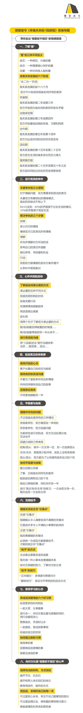
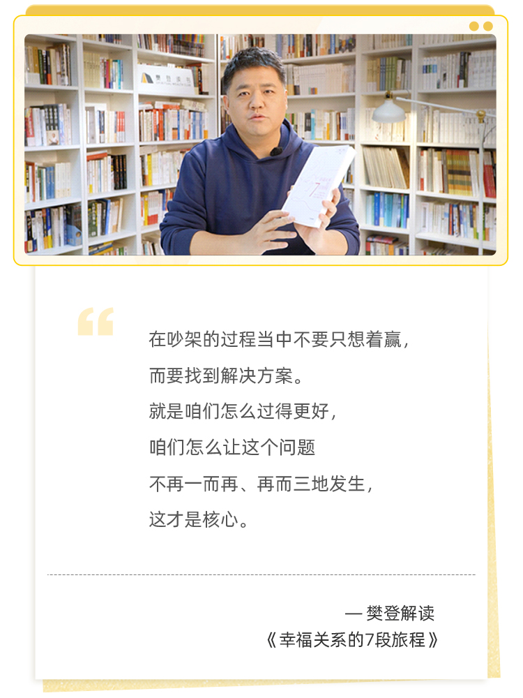

思维导图

荐 语
在婚恋关系中，我们追求甜蜜幸福、恩爱一生的相知相伴。然而，当激情褪去，我们爱彼此，却感受不到爱意。渐行渐远的关系，让亲密关系出现裂痕与危机。
本书将用7个步骤、52项练习，帮助你与另一半破除相爱不相恋的情感困境，重建婚恋中的情感纽带。
你 将 获 得
• 了解重塑幸福关系的7个步骤
• 刷新认知，发现“爱”的不同含义
• 学会用“争吵”解决问题
作 者 简 介
[英] 安德鲁·G.马歇尔
英国婚恋治疗师，曾引导数十万情侣、夫妻走出婚恋危机。已出版多部畅销作品，长期为《泰晤士报》《独立报》撰写专栏文章。
精 彩 选 段
- 我们争执的目的不是赢，而是得到所需。P.01
- 当一段关系一路走来都够幸福，就有可能把那种温暖的感受误以为是依恋。事实上，它已变成关爱，也就是关心某人、希望对方得到最好的，却缺乏浪漫激情。P.18
- 在重大挫败期，例如关系破裂时，会感觉好像世界末日。然而，黑暗日子有可能是崭新、刺激生活的跳板。秘诀在于把今日的苦涩柠檬变成明日的柠檬汁。P.290
注：上述页码为句子在实体书中所在的页码。

演讲实录
各位好，今天我们来讲一本相当扎心的书，叫作《幸福关系的7段旅程》。书名听起来不扎心，但你看一下它的英文名字就知道了：I Love You But I’m Not In Love With You，就是“我爱你，但是我找不到爱的感觉了”。
这本书是安德鲁·马歇尔写的，他是英国著名的婚姻咨询师。有一天，他在进行婚姻咨询的时候，一个来咨询的妻子突然之间说出了这句话：“我爱你，但是我没有在爱里的感觉。”大家记不记得张国立演的一个电影里的角色，他就跟他老婆讲：“我现在拉你的手，就像左手拉右手一样，没有感觉了。但是如果你把左手砍一刀、划一个口子，我的心会一样疼。”这就是和“我爱你，但是我没有在爱中的感觉” 一样的描述。
以前人们离婚往往是因为恨对方，但是现在离婚往往是因为不够爱了。这里边还有一些数据：47%的受访者抱怨婚姻当中“热情不再”，43%的人说“我爱我的另一半，但我不再有在爱里的感觉”，或者“我的另一半不再爱我了”。
令大多数人意外的是什么呢？前来咨询的人中，他们想要离婚的理由往往不是我们传统认知的那些，比如说只有24%的受访者提到是金钱的问题，21%的人提到外遇的问题，19%的人提到双方对孩子教育理念的分歧，15%的人是吵架吵到失控。过去我们认为这些是最常见的离婚理由，但今天它们所占的比例正在不断下降。
而47% 或者43%的人都认为“热情不再”才是最要命的一件事，所以这本书就是为了帮大家解决：为什么我们会出现这种热情不再的感觉，以及出现这种感觉之后，我们怎么样能够找到第二次吸引的机会，然后让婚姻重新走回到有爱的感觉的旅途上来。所以我相信这本书对很多家庭会有很大的帮助，就算你今天没有到这个年纪，没有这段经历，也把这本书留在你的书单里边，说不定将来总有一天会用上的。
首先，我觉得这个作者非常有贡献的一点，就在于他说“我们得了解对于爱的定义”。你看我们经常会说“我爱你”，但仍然存在很多分歧。一个人说：“你不爱我了。”另一个人说：“我明明就是爱着你，我为你做了那么多的事，我最关心的人就是你。如果你生病了、住院了，我会第一时间来到你的面前。”另一个人说：“不对，我觉得你根本就是不爱我，因为你跟我在一起的时候只会看电视。”为什么会出现这样的分歧呢？一方坚定地认为自己爱，另外一方坚定地认为他不爱，原因是，我们用的“爱”这个词太笼统。
这个作者说，整本书里边最核心的部分就是“重燃爱火的七个步骤”。
第一步叫作了解爱情的本质。就是我们不能够用一个词——英文的love或者中文的“爱”来代表所有感情。实际上，夫妻两个人在一生当中所经历的感情过程是不一样的，但是我们都把它称作是“爱”。实际上，你应该换一个更确切的词汇。
这个作者认为夫妻之间至少有三种不同的爱，第一种叫作迷恋。什么叫迷恋呢？作者认为，从恋情开始算起，迷恋期大概能持续十八个月到三年之间。我还听过更极端的说法，说热恋期就一个月，一个月过了以后就没有这种感觉了。这个作者认为迷恋期是十八个月到三年。迷恋期的特点是无条件的，你只想跟他在一起，只要见不到就会难受，只要见面干啥都行。两个人就像长在一起一样黏糊，完全处在热恋的过程当中。这个时期叫作迷恋期。
所以当一个太太跟丈夫说“我觉得你不爱我”的时候，她所表达的可能是“你不迷恋我了”。但是丈夫说“我爱你呀”，他那个“爱”是什么呢？可能是第二种，叫作“依恋期”。“依恋”是必须要呵护的一种状态。什么叫“依恋”？这个有必要跟大家讲一下。有的书籍和文章把它叫作“成熟的爱”，听起来有点无聊，还有人说这是“较深层的感受”，它似乎是比迷恋更进一步的状态，因为迷恋虽然是一种强烈感受，却缺乏深厚的根基。
我们同样需要一个新词来解释第二阶段的爱，我把它称为依恋，这种爱不像迷恋那样稍纵即逝，但同样美妙：星期天早上，在阳光的照射之下，你看到你的另一半在帮你准备一份早餐，然后你躺在床上，依偎在泛着芳香的床单里边，那种感受就是依恋。这种依恋的感受更成熟，没有迷恋期那么狂热，而且持续的时间更长。
但是你注意，这个时期是需要呵护的。也就是说在走过依恋期的时候，两个人需要倾听，需要拿出时间来一块儿吃饭、逛街，需要共同努力去做一些事情，需要安排出专门的时间一块儿度假等等。依恋期需要悉心的呵护才能够保持下去。
那么最后的状态就是张国立在戏里边说的“左手拉右手”的状态，叫作关爱。关爱是什么呢？关爱是不带条件的爱，就是双方已经成为亲人了，已经活成所有亲戚当中最亲的亲戚了，这时候不需要别的条件了。这种时候，两个人活得更像是亲人朋友，双方有共同的经济利益，有共同的情感诉求，大家共同爱着自己的孩子，侍奉家里的老人，但是没有了之前的迷恋，甚至是依恋的状态了。
这三种东西都叫作love，都是爱，是爱的三个不同的阶段。所以我们首先要了解到“爱”的本质是不一样的。接下来，一个婚姻关系有六个阶段，也是处在第一步当中，就是了解爱情本质当中的。你得知道所有的东西都有发展的阶段，像我们讲“领导力”，你得研究团队的生长阶段；你如果创业的话，就得知道产品的生命周期。我们现在也得知道婚姻的生命周期。
婚姻大概分六个阶段，第一个阶段是前十八个月，叫“合二为一”阶段。就那时候两个人谈恋爱谈得火热，谁也拆不开。
接下来第二到第三年的时候，叫“筑巢期”。筑巢期就是两个人在一起买房子、装修等等这个过程。这时候，人们会逐渐产生厌烦的情绪。厌烦的情绪从筑巢期就开始有了。
然后，第三到第四年的时候，叫作“自我肯定期”，是在两个人的关系当中寻找自己的时间，就是“我到底是个什么样的人”“我在婚姻当中扮演什么样的角色”“为什么我觉得我逐渐丧失了自我呢”，你开始慢慢地醒悟，开始去寻找自己的存在感。
接下来，第五到第十四年的过程叫“合作期”。“合作期”的时候，两个人风雨同舟，生活比较艰苦。双方要互补、互相信赖、养育孩子。日本有一个很有意思的动画片叫作《我的邻居山田君》。那里边有一个故事特别好玩：山田君他们那一家人在特别艰苦的时候风雨同舟，在所有人面临着贫穷，面临着学费问题，面临着老人变老、生病的过程，顶着巨大的压力的那段时间里，他们非常团结。
但是当这些外在压力全部结束了以后，他们开始天天吵架，因为他们过了合作期了。然后在这个过程当中，我们慢慢地把对方的付出当作理所当然，因为我们是一家子，我们在一块儿不断付出。
然后，到第十五到第二十五年的时候，叫“适应期”。这时候高考结束，孩子离家，考上大学走了。在适应期的时候，最容易放弃婚姻。现在我们在生活当中也能够看到这种情况，在中国叫作“高考离婚率”。就是很多人在孩子高考以后，选择离婚，离开家庭。两个人说我们要过自己的生活，所以放弃了。这是个非常危险的时期。
如果你能够有幸走过这个时期，第二十五到第五十年之后叫作“重燃爱恋期”。就是大家挺一挺，度过了适应期以后，这时候你发现这两口子反倒会更迷恋、热爱对方了，也就是我们所说的“老来伴”。“老来伴”不光是互相伴随着过日子，两个人的感情也更丰厚了。所以我们经常能看到好多人在网上秀自己拍到的街拍：一个老爷爷牵着一个老奶奶的手，一起散步。这种情况非常常见，因为在这个时候双方感情稳定了，重新爱上了对方。这就是第二十五到第五十年以后，叫“重燃爱恋期”。这就是幸福关系的六个阶段，六个生命周期。
现在我们了解了爱情的本质，知道了有三种不同的爱，有六个生命周期，这是第一步。
第二步叫作“看清我们到底在争些什么”。就是无论是对爱的定义不同，还是需求不同，还是这种种问题，总之，导致我们婚姻最后走向解体的都是大量的争吵。这个作者说，不要回避争吵，我们应该学会争吵。
书里有一个观点跟以往看的书不一样。以前我们看所有的婚姻书，或者是教育孩子的书，都有一个要求：不要在孩子面前吵架。大家似乎觉得这个不用质疑，不要在孩子面前吵架，因为你会把孩子吓着。但是这个作者说，如果你们从来不在孩子面前吵架，孩子怎么能够学会跟人吵架呢？孩子怎么能够学会处理不同的问题呢？
所以，不是说不要在孩子面前吵架，而是不要在孩子面前失控。如果你在孩子面前情绪失控，然后摔东西、砸东西、大喊大叫，这个是没用的，你给孩子做了一个非常错误的示范。你可以在孩子面前争论、争吵，但是你要用适当的方法解决问题。孩子才能够看到，原来两个人可以发生不同意见，发生不同意见以后是这样解决的。
那怎么才能够学会争吵？有三个法则很重要。我觉得这三个法则对我们每个人都会有帮助。
第一个法则是：你要知道婚姻当中所有的责任都是半斤八两。就是一旦我们吵架吵凶了，就会说“都怪你”，那个人说“你把责任都推给我，都怪你”，两个人在不断地推卸责任。这个根本不重要，不需要这样推卸责任。
为什么呢？因为你要知道原则就是所有的责任都是半斤八两。你可能会说“明明是他出轨，凭什么是半斤八两”，但其实外遇往往并不是婚姻破裂的原因，而是婚姻破裂的结果。你不能够简单地说“都怪他”或者“都怪我”，因为两个人半斤八两。这样的话，关于责任的分配比例，你就不需要花那么大力气来算四六开还是三七开。
法则二，情绪模式相同的人会相互吸引。就是你们俩能够走到这一个屋子里边来，都不是白来的，因为你们俩是差不多的人。有人会觉得：“不对啊，我们俩的生活环境完全不一样，他长在知识分子家庭，我长在工人阶级家庭，我们俩怎么会一样呢？”虽然生活环境不一样，但是你们俩的情绪模式相同。就是很有可能你们解决矛盾的方法都差不多，所以你们俩才会相互吸引。因此在你跟他吵架，恨不得想要杀了对方的时候，你要想到，他可能就是另外一个你。他是一面镜子，他把你的情绪反射给了你而已。所以你要理解他跟你有相似之处。
第三个法则非常重要，也是我们在《亲密关系》那本书里所强调的核心，叫作80/20法则。这个80/20法则是什么意思呢？80%的分歧是因为过去的事，最多只有20%是因为现在的事。
就像我们在《亲密关系》里边讲的：一个女孩永远不收拾盥洗室，那个老公就非常生气，和她吵架。实际上你说真的是因为这个盥洗室乱糟糟的所以吵架吗？其实不是，是因为老公在自己家里边排行最小，从小到大说话都没人听，所以他最重视他说的话算不算数。他觉得：“我讲话你要听，你承诺你要收拾，你为什么不收拾？你不尊重我。”这是老公生气的点。这个生气的点更多是来自于小时候所遭遇的那些问题。
那这个小姑娘为什么喜欢把盥洗室搞得乱糟糟呢？不是因为她享受这件事，而是因为她小时候有一个非常严厉的爸爸，她的爸爸会把她不放回原位的东西直接扔掉，她受过这样的伤害。因此她觉得表达爱的方式就是“我就算把东西乱放，你也不会骂我”。
这就叫“80/20法则”：我们所表现出来的东西，我们的情绪，我们的愤怒的80%都跟我们的童年有关，跟我们小时候所遭遇的事情有关。而我们今天吵架只集中在现在所发生的20%，这是吵不明白的。
这三个铁律你学会了，你才能够知道在争吵的过程当中到底要争什么，到底要说什么，到底要把什么东西讲明白才能够把这个疙瘩解开，否则的话你只浮在表面，说：“你不爱我，这件事是你做错了。”这时候你发现，你永远都讲不明白这些事。这是三个基本法则。
那有的人会采取回避策略，遇到了矛盾、愤怒，会选择回避，其中就包括疏离的感觉。然后还有合理化，合理化就是：他就那人，没办法，就这样吧，谁家不是这样呢？都有困难、痛苦。当你认为痛苦是理所当然的时候，你就不会努力去改变它了。这是回避的第二个策略，叫合理化。
还有就是略过，对这些事避而不谈，假装没发生。为什么？因为大家心里边都有一个潜台词：好人都不会抓狂。就是我们觉得，肯定是一个有问题的人才会抓狂。你给自己一个这样的要求和标签，那你永远都不会准确表达自己心中所想，你也没法解决掉你们俩之间的矛盾和问题。
解决冲突的步骤是什么呢？我们应该学会探索、理解和行动。探索，就你得先搞清楚那80%是怎么回事，先搞清楚你们俩的情绪模式是怎么回事，把这些东西都搞明白以后，你才能够去理解对方的行为，也理解自己的行为，进而开始展开行动。
在吵架的过程当中不要只想着赢，而要找到解决方案。你看夫妻之间吵架，经常有一方说：“行行行，你厉害，你赢了，我不说了行了吧。”请问，这时候算是吵赢了吗？这时候另一方会觉得很舒服吗？
对方认了，说：“我错了，都怪我，行了吧？不说了。”你根本没有赢的感觉，只会觉得更窝火。你会觉得：“你就想这样糊弄过去吗？你就随便这么一认，就完了吗？”另一方觉得：“那我都认了，你还要怎么样呢？”所以输赢说得再清楚都没用。一方就是跪地求饶说“我错了”，没有用，因为我们想得到的是解决方案，就是咱们怎么能够过得更好，咱们怎么能够让这个问题不再一而再、再而三地发生。
要想解决这个问题，我们必须探索清楚那80%——在我们走进这个家庭之前，我们双方的人生所发生的事。这才是核心。所以这本书和我们之前讲过的《亲密关系》《幸福的婚姻》都不矛盾，都是一个体系的。这是第二步，看清楚我们到底在争吵些什么。
第三步，叫作“心怀共同目标”。就是我们要过上美好的生活，这是我们双方的共同目标。这里边有一个特别重要的知识点，就是你要知道每个人表达爱的方式不同，至少有五种。有一本书就叫作《爱的五种语言》，这本书的作者也研究过这个。
什么叫作爱有五种语言？就是人和人不同。比如说你老公向你表达爱的方式是下了班以后给你买上一兜糖炒栗子，他觉得这就是表达爱的方式，但是你觉得你老公对你好的方式应该是买一束花拿回来。甚至你给你老公买了花，或者你给老公买了一个什么贵重的礼物，你老公却说买这玩意干吗？他根本不觉得这个重要，他认为糖炒栗子更重要。这就是表达爱的方式不同。
那五种语言分别是什么呢？第一种，叫作创造优质的相处时间。你看有时候有一方会表达说：“咱们俩应该有更多的时间在一块儿。咱们俩都好久没有单独在一起过了。”你注意听，这个人表达爱的方式是什么？就是创造优质的共同相处的时间。但你注意这只是一种人。
第二种表达方式是关爱行动。比如说你病了，我陪你去医院；你发烧了，我给你头上放一个湿毛巾，给你弄一碗粥，给你冲个红糖水。这叫关爱行动。有些人是认为关爱行动才代表着爱。
第三种语言是充满感情的肢体接触，就比如说过来搂你一下，趁你不注意亲你一下，拉一下你的手，这个叫作充满感情的肢体接触。
然后第四个是感激的话语，有一方对另一方说：“谢谢，你的这种爱让我觉得很感动，非常感谢你。”非常严肃、认真地表达了这份爱的感受。另外一方说：“少来虚的。”当他说“少来虚的”的时候，他认为：你给我买糖炒栗子才是最重要的，一点实在的东西都没有，老说这些花言巧语。你看，因为双方所理解的爱的语言是不一样的，所以产生了这些分歧。
最后一种是送礼物。这五种方式都是表达爱的方法，但是我们双方不沟通，我们就不知道彼此偏好的爱的语言。有可能你看你抱怨的是：“你从来都没给我买过花。”但是你老公把挣的所有的钱都给你了。你老公在你生病的时候对你那么悉心照顾，那是因为他认为那个才是一个好男人的表现。但是你会认为送花、送礼物才是表达爱的方式。
然后还包括有的人说：“你从来都不陪我。”然后这老公说：“我忙成这个样子，我怎么陪你？我整天在为这个家庭负责任。”不同的人表达爱的方式不一样，那怎么办呢？就这里边我们需要沟通的是：我们要找到自己和对方最常用的表达爱的方式是什么，把这个语言统一起来。
比如说，问自己这样的问题：“我最觉得被爱的时候是……”你回去填一下，“我最觉得被爱的时候是什么时候”，然后你们俩都填一下。你就会发现你们俩对于最觉得被爱的时刻的感受是不一样的。
然后还有一句话，叫作：“我最常抱怨我的另一半……”就是“我最常抱怨我的另一半怎么怎么样”，或者“不怎么怎么样”，“他从来都不怎么怎么样”。这时候你就发现你所稀缺的那个爱的语言到底是什么。
这书里边有一个案例，一个女人开她老公的车，开完以后把车往那儿一停，不加油就回来了。然后那个老公早上起来一进车，打开一看，没油了。完了，上班要迟到了。因为他得去加油，加完油以后才能上班。
所以他回来以后就跟他老婆抱怨说：“你为什么开车不加油？”他说了这么一句话以后，这个女的就炸了。这个女的说：“你为什么指责我？”这个男的说：“我没有指责你，我就说你为什么开车完了以后不加油？给我造成很大的麻烦。”这个女的说：“那你加一下不行吗？你为什么非得指责我？你是不是觉得我干什么都不行？”然后就开始往这个方向引。
后来搞到只好去找心理医生咨询。咨询的结果是什么呢？你会发现女方把这个男生的提问视作是批评。原因是什么？往前追溯就发现了，这个女孩从小生活在父亲的批评当中，就是因为父亲总是批评她，遇到什么事都批评她，所以她对于批评极度敏感。
这就是我们说的惯性。痛苦是一种条件反射的行为，这是一种惯性。所以当她又遇到有人说了一句让她不快的话的时候，她立刻就理解为批评。然后就问这个男生说：“那你为什么要对加油这个事这么在乎呢？”这个男的说：“不是批评她，是因为早上很容易堵车，所以我一般晚上就加好油了。我出门的时间是卡着点的，然后一旦一堵车，去加油肯定迟到，迟到了会罚钱，那这是很严重的事，但是妻子不能体谅。”
所以从这么一个“不加油”的案例，你就能够发现，我们本质上都是因为早期的事情在吵架，但是我们不会好好地表达，我们也不懂得怎么样用爱的五种语言去把自己的情绪说出来，所以大家应该深度学习。在这本书里边只有短短的一章，但是我建议大家应该好好学习的是《非暴力沟通》，这本书给到了一个非常简版的《非暴力沟通》。什么叫简版的呢？就你只要把这个句式学会，你就已经基本上学会了非暴力沟通了。
这个句式叫作：当你……的时候，我觉得……，因为……。为什么这个三段式结构很重要呢？你看我们平常如果不用非暴力沟通，我们会这样说：“你做那件事让我非常生气，你让我非常痛苦，你让我非常尴尬。”我们把所有的责任全部都推在对方身上，对方当然会觉得是被指责。
但是如果你能够变成说“当你做了一件什么什么事”——这是一个陈述的事实，“我有一种感觉”——“我觉得很难过，我觉得很伤心”——“因为我小时候曾经遭遇过很多这样的状况”，“因为我曾经被别人怎么怎么样过，所以我现在特别在意和敏感这件事情”。这就变成了非暴力沟通。非暴力沟通和暴力沟通的最本质的区别就在于：暴力沟通的人把所有的责任都推向对方，非暴力沟通的人愿意探索自己内在的需求。
所以如果我们把自己内在的需求讲出来，这个情绪就缓解了很多。因此在这儿我们要学会这个句式：当你……，我觉得……，因为……。越是跟家里人、熟悉的人沟通，我们越应该用我们所学到的这些技能。我见过很多书友学了这个东西以后，可以改善工作的关系，可以改善跟客户、朋友的关系，但是不能够改善跟老公的关系。原因是一见到老公，那个火就已经上来了，完全忘记了三段式的方法。
所以如果你下次真的要吵架，最有效的办法是把这三段写在手上，写好，看着手说，照着小纸条似的这么念。这时候吵架的概率就会下降很多，因为大家可以探讨原因，互相都能够理解。所以第三步叫“心怀共同目标”，知道对方的爱的语言是什么，知道自己渴望的爱的语言，以及习惯使用的爱的语言是什么。然后开始学习用对方的语言说话，学习用对方所重视的东西来说话。
第四个步骤叫作“亲密花园里的游戏”，就是如何在夫妻之间制造亲密感。这里边有一个数据很有意思，就是在良好的亲密关系中，性的关系只占到30%。就是千万不要觉得说亲密关系就是性的关系，那样会给双方造成很大的压力。实际上肢体的接触、温柔的语言、亲密的态度就能够帮我们创造出来很好的亲密感。不要怕受伤害，就是当你跟对方在制造亲密感时，你去搂他一下，跟他说一句好听的话，对方不领情，或者反过来反唇相讥等等，没关系，不要怕受伤害。这时候才能够逐渐地去建立这种更亲密的感情。
然后第五个步骤叫作“平衡爱和自我”。因为在婚姻的后半程里边，人的自我开始复苏了，人觉得我不能够被你裹挟着变成了一个婚姻里的人。我的个性是什么呢？我的个人需求在哪儿？这时候你会发现，有的人忽视差异性，就是假装没有；有的人厌恶差异性，当差异性出现的时候就要大吵大闹；还有的人进行差异性的攻防战。
夫妻之间也经常会出现好几种不同的对待差异性的模式，一种叫作控制/屈从型，就是一方来控制，做什么、说什么，全是自己说了算，另外一方逐渐习惯，他说什么我就怎么做。这叫控制/屈从型。
还有一种叫作冷淡/冷淡型，就是我也不控制你，你也别理我，另一方说“我也是”，行了，咱俩各过各的。这就是冷淡/冷淡型。
还有一种是屈从/屈从型，就是我觉得我在屈从你，你觉得你在屈从我，两个人都过得特别委屈，两个人都觉得为对方做出了莫大的牺牲，但是都没有过上自己想要的生活。
那怎么办呢？有安全感的伴侣会鼓励彼此拥有自我。对方跟你不一样，对方拥有自己的人生，可以，我能够接受。所以在这儿有一个练习我觉得很有意思，可以推荐给大家，叫作“我主导/你主导”的一个游戏。
就比如说周末两天，你主导周六，我主导周日。你主导周六的时候，咱们家全听你的，什么事你说了算，你要干吗就干吗，我都帮你。你让我跟你出门逛街、看电影、吃饭，都随便。然后到了礼拜天，听我的，我要求大家一块儿看书，就一块儿看书；我要求一块儿听音乐，就一块儿听音乐。
当你用这种“我主导/你主导”的模式开始练习的时候，你会发现这种完全接纳的状态其实是很好的。有时候对方要求说：“你陪我出去走走，散散步。”你说：“我不想去。”但如果你真的接纳了这个模式，知道今天是人家做主，今天人手里拿着权杖，那他要出去散步，就去散步。你反而能够发现散步的乐趣，你反而能够发现陪他看一场文艺电影的乐趣，因为你内心当中没有抵抗。
所以用这种练习可以帮我们大家逐渐理解分歧，走入对方的世界，感受到对方所提的这些要求背后也是有它的意义的，也是有美好的部分的。这是一个有效去解决分歧的办法。然后有时候你会发现不是亲密关系的问题，而是过去很多问题的投射，甚至有时候是抑郁症。这个作者在这儿提醒，如果你发现你丈夫特别不配合，我们经常会理解说这个人怎么这么讨厌，其实不是，也可能是他生病了，他的激素水平发生了变化，这也有可能。
还有一种状况叫情感不忠，就是他的情感跟别人跑了，他在情绪上喜欢上了另外一个人，这也是有的。所以第五个步骤就是要“平衡爱与自我”，就是让我们知道遇到了差异怎么办，我们怎么样去解决差异化的问题。这个书里给了大家很多练习的手法，因为那个练习题很复杂，我们就不讲了。大家如果想要去试的话，你可以根据那个书里的练习题去做一做。
然后当你解决了爱的语言的问题、亲密关系的问题、自我的问题，就到了第六步，叫“给予”。“给予”是什么呢？就是你能够做一些什么事来推动你们的生活。这里边作者用到了格拉德威尔写的一本书，叫《引爆点》。婚姻当中的很多争吵有一个导火索，这就是“引爆点”。那个导火索可能是一件非常非常小的蠢事，比如说：有一个妻子，只要她发现孩子的鞋子是脏的，她就跟她老公吵架。然后她老公就觉得莫名其妙，觉得这么简单的一个事，这孩子的鞋子脏了，没洗，你为什么要跟我吵架呢？
后来才慢慢发现，这个女孩子小时候，她爸爸对他们表达爱的方式就是帮他们洗鞋子，她爸爸只要把鞋子一洗干净，他们就觉得爸爸好爱我们。所以她认为洗鞋子是爸爸对孩子表达爱的方式，但是你这个爸爸竟然不给孩子洗鞋子，所以就会因为这件事争吵，这就是一个引爆点。
那怎么样去找到引爆点，或者我们换一个思路讲，怎么样去找到好的引爆点，找到让我们这个婚姻能够变得更好的那个引爆点，这都是可以去思考的问题。这个作者给出的建议是：留意你的内部障碍，然后自己做一些小事来改变。早上起来做早餐的时候，给他写一个小便条；晚上他在那儿干什么事，你坐在旁边陪他一会儿，就是这样的小事。这些小事就有可能会成为你们的正向引爆点，会让你们的关系慢慢变得亲密、缓和。
这里边要强调正向强化的作用。这个作者跟我一样有过养小狗的经历。我在讲领导力的课的时候经常提到我养小狗的经验，她也是。她那个小狗极其热情，会搞得大家都很紧张，家里乱糟糟的。然后她就去咨询那些宠物训练师，说为什么我们家的狗这么不听话，那么活泼、好动。那个宠物训练师说，你想想看，你在它扑你的时候是什么反应？
你就会发现大量宠物的家长，在这个宠物扑过来的时候的反应是“别动，别动我，你下去，下去”，就有过度的反应。这种过度的反应在宠物看来就叫作热情、有反应。它判断这个事“要不要接着做”的原因，就来自于你给它什么样的反馈，你给的反馈越多，它干得就越带劲。
所以他说，你所应该做的是以后它来扑你的时候，你转过身去就好了。你转过身不理它，没有反应，它就觉得这个事不好玩。这个还不是最重要的，重要的是你要在它安静的时候，当它安安静静趴在地上的时候，你过去抚摸它，陪它玩。只需要两三次，这小狗就学会了：安静才能够得到抚摸，安静才是主人有反馈的时候。
大家反思一下，我们对孩子也好，对宠物也好，对伴侣也好，如果对方做对了，我们的反应往往是：嗯，岁月静好，现世安稳。那就是不用反应，没事了，今天孩子多乖，所以不反应。而当他做错事的时候，我们反应极大。
我们讲的领导力也是同样的道理，我们一个团队、公司里，你作为一个领导者带领一个团队的时候，往往都是在员工做错事的时候我们最激动，我们给予极多的反馈。这时候你发现，员工在你面前永远紧张，永远不知道怎么做是对的。但是一个真正有领导力的领导应该是，在员工做了令你满意的事、对的事的时候给他反馈，让他知道这个事情很重要。实际上这就是要用正向反馈、正向强化的方法。当对方做了一些小小的事情，让你觉得感动的时候，请说出来，请表达出来，他才能够知道这个是对的。
还有一个就是我们自己也要学会做出不同的反应。当你的老公做了一件令你很生气的事，这时候按照常规的做法你是该发飙了。但是你想想，能不能做出什么不同的反应，你今天能不能试试看做一个跟他以为的不一样的举动。他预料到你要发飙，但你却没发飙，这个过程就叫作不同的反应。
这就是一个工具，当你能够提醒自己用不同的反应来对待自己的孩子、家人的时候，你的生活才会发生改变。如果你总是根据惯性来反应，比如孩子没写作业你一定发飙，那你的生活永远不会改变。但如果今天你发现孩子没写作业，你没生气，这时候你发现这个世界就不一样了。
我那天是看哪个作家的回忆录，特别有意思。他跟别人玩疯了，回家回得很晚，然后他的小朋友就跟他讲，你完蛋了，你今天回家肯定要挨揍了，因为你回家这么晚。然后他就很忐忑、紧张。回到家里边，结果他妈妈就问他说：“吃饭了吗？”他说：“没吃。”他妈妈就从厨房里边把饭端出来让他吃，仅此而已。就这么一件事情，这个孩子能记一辈子。
你想想看，就是因为妈妈没有按照惯常的那种方法说要打人了、要骂人了，妈妈只是给他端来了饭让他吃，没有让他饿着，这个孩子就会觉得特别感激。这就叫作不同的反应。
所以我们说不要活得太闷，有时候我们会说你这个人好无趣，为什么“好无趣”呢？你会怎么反应我都知道，那不就无趣了吗？你这个人在别人面前已经完全透明了，你没有任何惊喜，那就很容易造成无趣的感觉。
但是如果你是一个丰富的人，各位想想看什么叫“丰富的人”，就比如列宁描述他的妻子说：“我跟她一辈子风风雨雨过来，每一年都会见到一个新的她。她是新的，她在不断地改变，她在成长。”这时候你就不会无趣，就不会闷。
有时候我们觉得婚姻越过越没意思，往往需要反思的是你是不是自己都变得没意思了，你是不是自己就这么一直根据惯性来反应，该生气就生气，该摔东西就摔东西，这么活下来的。还是说，你可以跟别人不一样。你可以读书，可以反思，可以改变自己的行为，可以做出不一样的反应。这是第六步“给予”。为什么叫“给予”？你能够做出不同的反应，就是给予别人更多的惊喜，给予别人更多的关爱。
第七步，就是要学习。婚姻的过程一定不是一帆风顺的，就算我们把前六步都做到了，这个婚姻还是会跌宕起伏。那么我们要始终保持一个学习的心态，学会什么叫作“滋养爱情的六个习惯”。
哪六个习惯呢？第一个习惯叫“投资时间”。滋养爱情需要投资时间，需要真的拿出一些时间来一块儿旅行、看电影、读书、安静地聊天。很多夫妻都没有安静聊天的时间，回到家不说话，要说也是说孩子，除此之外没别的话好说了。那我们就需要学会投资时间来讲话。
然后第二个习惯叫“一起大笑”。找到一些两个人能够一起大笑的机会。你知道，这个在生理层面就会产生快乐。
然后第三个习惯叫“言行合一”。我们有时候说“我爱你”，然后那个说“我也爱你”“晚安宝贝”“晚安”。当你说“我也爱你”这种话的时候，你没过过脑子。什么叫作“言行合一”呢？你的肢体语言，你日常的所作所为跟你嘴上所表达的爱是合在一起的，这才是言行合一的状态。
然后第四个习惯叫“赞美的艺术”。你要经常地发现对方的优点，表扬他，并且说为什么。因为人们都喜欢能够看到自己优点的人，越表扬他、赞美他的那个人更容易获得他的付出。
然后第五个习惯叫“承担风险”。你们俩可以一起做一些冒险的活动，你们俩可以允许婚姻出现一些不一样的状态。比如说这书里边讲到两个人，一个人要到巴黎去，然后另外一个人觉得说，你去巴黎了，我们分开这么长时间，婚姻可能会出现很多波动。但不如试试看，让她去。让她在巴黎待一段时间后，这个老公过来看妻子，后来他们逐渐找到在巴黎生活探险的乐趣。这就是在婚姻中，你需要承担风险，而不能够要求这个婚姻完全波澜不惊。
第六个习惯叫“给彼此独立的空间”。就是虽然两个人是两口子，虽然是夫妻，但是他也是独立的个人。“独立的个人”是非常重要的一个前提，尊重对方的独立性，允许对方有自己的时间，这个是保持婚姻的忠诚度、新鲜感的非常重要的方法。
这六个叫作滋养爱情的六个习惯，也就是我们在第七章——“学习”的这一章里边所要学会的东西。好了，以上讲的就是重燃爱火的七个步骤，我们再复述一遍：
- 了解爱情的本质；
- 看清楚我们到底在争些什么；
- 心怀共同的目标，学会用对方喜欢的语言来表达爱；
- 在亲密花园里边的游戏——找到亲密关系的感觉；
- 平衡爱和自我，学会如何面对矛盾和分歧；
- 然后给予，做出一些小的行动来改变你们的关系；
- 学习如何培养滋养爱的习惯。
这里边有任何一条你觉得对自己有帮助，有可能能够去试一试，内心有所触动，我觉得都有可能会给你的生活带来巨大的改变。然后接下来有一个话题就是，要不要把自己的这种感受跟对方说。就是“我爱你，但是我没有爱的感觉”，这种感受要不要告诉对方。
作者就这个问题专门写了一章，就是“告白”。你知道好多人没有勇气做这样的告白，但是如果你永远不做这样的告白，结果是什么呢？有一个丈夫描述说：我每天看到我的妻子带着几个孩子在那儿转来转去，然后在家里边看起来很热闹的样子，别人都觉得我生活得很幸福，都觉得我是在一个小康之家，过得很好，只有我自己坐在那儿，觉得我自己绝望得要死，就这种感受。
然后也有妻子说这样的话：就觉得看起来我忙忙碌碌的，相夫教子，但是我真的觉得非常空虚，非常痛苦。我不知道该怎么样面临接下来几十年，为什么我的生活要这样下去？我相信很多人会有这样的感觉。
那这个作者的建议是，你应该把这种感受告诉你的配偶。就是如果你不把这种感觉诚实地告诉你的配偶的话，你们可能永远没有机会解决这个问题。即使被告知的那一方会觉得自己像是经历了一场车祸一样，就是走到路上，“嘣”一个大卡车直接撞过来，被撞晕的那种感觉。
这时候这个作者就说：对于双方来讲，我们都应该学会强调正面意义。就是如果你有成长的心态，像我们讲《终身成长》，你要有成长的心态，你会知道掩盖问题、回避问题并不是一个好的方法。我们有了成长的心态后，我们就要强调这个告白的正面意义：就是他说出来了，至少他还是爱我的，那么我们要想办法解决这个问题，想办法让我们的爱火重新被点燃。
这个作者不赞成分居，如果分居的话，有可能会进一步地走向离婚，分居会有更大的威胁。但是也有人就会要求分居，分开一段时间，甚至对方都提出了离婚这样的诉求。那么怎么办呢？如果对方提出这样的要求怎么办？
作者说，你首先要学会的是安顿好自己的每一天。就是如果你感觉到这个“车祸”发生了，自己被“撞飞”了，然后你开始颓废、哭泣，然后每天昏天黑地，也不睡觉，脑子里边就是想这几件事，翻来覆去地不停想、不停想。这时候你的魅力值会下降得更快，然后对方会觉得长痛不如短痛，跟你在一起会互相折磨，生活会更糟糕。
所以你首先应该学会的是安顿好自己的每一天。送孩子上学、安顿好生活、锻炼身体、自己读书，然后你想难过的时候你可以哭一下，但是你该做的这些健康的事你要做，让自己的生活尽量正常一点、健康一点。
然后有一个要求是不要过度分析。好多人就会把所有事慢慢地想、慢慢地想，哪个细节，哪个动作，“上次他遇到那个人说那句话，我估计他是这个意思”等等，会把老公或者是妻子所做的任何一个小小的行为放大，说这就代表着他怎么怎么样。你的头脑当中的过度分析会导致很多的无事生非，会导致很多莫名其妙的矛盾诞生。
过度分析会让一个人疯掉，就是我见过有的人跟我来讲，就是说我过度分析到我看什么事都跟他有关，我看什么事都有深意，我觉得我自己快疯了。过度分析对自己、对这段关系、对对方都会有极大的伤害。
所以不要过度分析，要讲究禅宗的“如实”。为什么禅宗很厉害？各位知道，学禅有助于帮助我们走出痛苦的经历。“禅”是什么呢？禅是有这杯茶就喝，好好体会这杯茶的味道，甚至体会这个杯子的温度，这时候正念就在当下。至于那个人怎么想，跟这杯茶没有关系。此时此刻我的人生只有这杯茶，喝掉它，就好了。
当你能够如实地跟当下产生连接的时候，那就是完全没有过度分析的状态，一般人做不到。但是如果你在做分析的时候，你能够提醒自己说“不要过度分析，到此为止，差不多了”，就行了，这已经很不错了，最怕的是无休止地过度分析。
还有一点就是要学会控制罪恶感。控制罪恶感是对双方的，就是有的人做完了这个告白以后会觉得特别罪恶，会觉得我怎么这么坏，我背叛了他们。但实际上你要控制好这个罪恶感，因为罪恶感会把你带向另外一个方向，就是你不去面对问题，你没有想让这个事情变得更好，并解决这个问题，而是因为这个罪恶感导致你自责或者责备他人，或者是做了无谓的妥协等等，最后反倒不利于解决问题。
所以这个作者认为，如果你真的觉得生活很绝望，如果你真的觉得你爱他，但是毫无爱的感觉，你就需要跟对方一块儿来分析这个事，甚至跟你的另一半一块儿把这本书读一下，读完以后再来分析、再来讨论，就可能会好很多。如果你觉得让他读这本书很困难，至少可以让他一块儿听，坐在车上的时候听一听，有可能能够引发一个话题，然后进一步延伸下去。
最后讲什么是更好的爱情。就是如果你能够经历这么一次波折，走出“爱而无感”的这个阶段，很有可能会进入“二次吸引”的阶段。“二次吸引”的阶段就是更好的爱情，双方坦诚相待，然后两个人都愿意学习新的事物，大家对于爱有了更深入的了解。然后你们俩经常会回忆当初相遇时那种“魔力”：就是最开始那十八个月的时候，你们热恋的那种感觉。然后记住每一段经历，这些都有积极的意义。
我们每个人需要讲好自己的情感故事，就是人经常会在头脑当中给自己设定一个剧本，然后沿着这个剧本的方向去发展。比如说有的人就觉得“离婚是迟早的事，我很绝望，我没办法”，当你用这个“离婚是迟早的事”来不断地暗示自己的时候，潜意识当中你就会逐渐往那边走。你的过度分析、你的语言、你的姿态、你的自我防卫，你像刺猬一样不断地保护自尊的那种状态，就会使得对方想要跟你离婚，最后就会变得越来越糟糕。
因此，学会讲好你自己的情感故事，给自己设定一个更加积极的、更加健康的、更加具有成长性的心态，你们可以面对挫折，可以一块儿学习来解决问题，甚至就算发生了什么你原来不期望发生的事情，你也依然可以过好你的生活，这个才是我们自己应该具备的。
对于自我人生的态度，你看我们一共讲过这么几本关于婚姻的书：《亲密关系》，这是从心理学的角度深度分析人和人之间的关系；然后《幸福的婚姻》，告诉我们说生活中的哪些表现、反应会影响到我们的婚姻能否继续；然后《幸福关系的7段旅程》，就是当你觉得爱无感的时候，你应该怎么做；如果实在不行真的分手了，我们还有一本书帮助大家，叫作《分手后成为更好的自己》，因为你依然可以过好自己的生活。
所以总之，一个人首先得学会爱自己，才能够懂得爱别人，才能够让双方都活得更好。希望大家能够直面自己婚姻当中的问题，并且愿意想办法去解决它。这其中最重要的一件事，就是不要轻易地放弃，然后努力地做一些力所能及的小事，逐渐地改变自己和他人之间互动的关系。同时，也可以把它传播给你身边的朋友。如果你觉得他们的夫妻关系有问题，就把这本书推给他，让他听一听。我们有一个功能是可以免费推给你的朋友听的，而且可以听全本，只要点右上角那个键就好了。
在今天的互动话题当中，我希望大家如果有勇气的话，可以在留言区写下你的情感故事。不用写得像小说一样那么仔细，但是如果你愿意表达出来，可能对你就是一种释放，对其他书友也是一个借鉴，我们大家可以交流一下自己所面临的情感的困境。谢谢大家，我们下周再见。